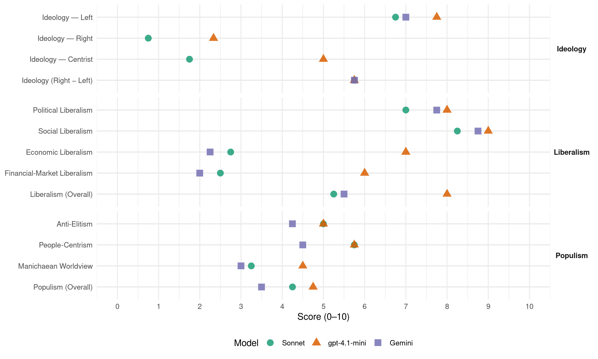

SV (Norway, 2017)
manifesto_id 12221_201709
Get full text: This site shows derived annotations and short verbatim quotes only. The full manifesto text is © Manifesto Project / WZB — obtain it via manifesto-project.wzb.eu using the manifesto_id above.
Headline scores
| Dimension | Sonnet | gpt-4.1-mini | Gemini |
|---|---|---|---|
| Populism (Overall) | 4.2 | 4.8 | 3.5 |
| Anti-Elitism | 5.0 | 5.0 | 4.2 |
| People-Centrism | 5.8 | 5.8 | 4.5 |
| Manichaean Worldview | 3.2 | 4.5 | 3.0 |
| Ideology (Right − Left) | 5.8 | 5.8 | 5.8 |
| Liberalism (Overall) | 5.2 | 8.0 | 5.5 |
| Political Liberalism | 7.0 | 8.0 | 7.8 |
| Social Liberalism | 8.2 | 9.0 | 8.8 |
| Economic Liberalism | 2.8 | 7.0 | 2.2 |
| Financial-Market Liberalism | 2.5 | 6.0 | 2.0 |
Evidence per dimension
Economic Liberalism
Gemini · score 2.0 · verified · chunk 1
“si nei til avtaler som pålegger oss mer markedsliberalisme”
Norge har nå muligheten til å forhandle fram en bedre avtale med EU enn dagens EØS, og si nei til avtaler som pålegger oss mer markedsliberalisme.
Gemini · score 2.0 · verified · chunk 2
“forby salg av kjøtt med tap”
Redusere kjøttforbruket i Norge. Vi vil forby salg av kjøtt med tap for å redusere matsvinnet og øke forståelsen
Gemini · score 2.0 · verified · chunk 3
“Stanse all profitt innen alle velferdstjenester”
Arbeide mot profitt på velferdstjenester. Stanse all profitt innen alle velferdstjenester som er finansiert eller delfinansiert
Gemini · score 3.0 · verified · chunk 4
“Øke det statlige eierskapet og”
Øke det statlige eierskapet og bruke det aktivt for industriutvikling.
gpt-4.1-mini · score 7.0 · verified · chunk 1
“SV vil ha en økonomi som fungerer godt for alle. Vi vil gjenreise tanken om at sosial utjevning og felles velferd skaper trygghet og frihet for alle.”
Det økonomiske systemet vi har i dag fungerer best for de på toppen. De siste tiårene har høyresiden vært på offensiven i en nyliberalistisk epoke preget av mer markedsmakt og voksende ulikhet. SV vil ha en økonomi som fungerer godt for alle. Vi vil gjenreise tanken om at sosial utjevning og felles velferd skaper trygghet og frihet for alle.
gpt-4.1-mini · score 7.0 · verified · chunk 2
“Støtte opp om samvirkebedrifter og selskaper med demokratiske eierskapsformer”
Demokrati i arbeidslivet Arbeiderbevegelsen har vært avgjørende for å bygge den norske velferdsstaten og folkestyret, og gjort Norge til et mer rettferdig samfunn. SV vil: Støtte opp om samvirkebedrifter og selskaper med demokratiske eierskapsformer. Vi vil ha støttetiltak i en oppstartfase for slike bedrifter.
gpt-4.1-mini · score 7.0 · verified · chunk 3
“Arbeide for trepartssamarbeidet. SV vil: Innføre en franchiselov. Loven må gjøre kjeden endelig ansvarlig for at arbeidsmiljøloven følges”
For å verne om friheten og medbestemmelsen til norske arbeidere må det norske arbeidslivsdemokratiet utvides og vi må arbeide for trepartssamarbeidet. SV vil: Innføre en franchiselov. Loven må gjøre kjeden endelig ansvarlig for at arbeidsmiljøloven følges.
gpt-4.1-mini · score 7.0 · verified · chunk 4
“Støtte opp om tiltak som sikrer en radikal omfordeling av makt og ressurser”
SV vil bidra til et økonomisk system mot global ulikhet. For å bekjempe den globale ulikheten er det avgjørende at vi setter inn tiltak mot kapitalflukt, får fattige land ut av gjeldskrisen og stopper den økende tendensen til udemokratiske og ulikhetsskapende handelsavtaler.
Sonnet · score 2.0 · verified · chunk 1
“Si nei til privatisering og konkurranseutsetting”
Si nei til privatisering og konkurranseutsetting av offentlige tjenester, og søke å tilbakeføre tjenester som har blitt privatisert eller konkurranseutsatt
Sonnet · score 3.0 · verified · chunk 2
“Statlig eierskap og samfunnsøkonomisk lønnsomhet må være en forutsetning”
Statlig eierskap og samfunnsøkonomisk lønnsomhet må være en forutsetning for eventuelle ytterligere mellomlandsforbindelser. Nye kabelprosjekter må veies opp mot norsk industriutvikling
Sonnet · score 3.0 · verified · chunk 3
“Avvikle anbudsordninger, bestiller/utfører-modeller”
Avvikle anbudsordninger, bestiller/utfører-modeller, og andre styringssystemer tilpasset marked og konkurranse, i velferden.
Sonnet · score 3.0 · verified · chunk 4
“Øke det statlige eierskapet og bruke det aktivt”
Øke det statlige eierskapet og bruke det aktivt for industriutvikling. Nye grønne næringer kan bygges i Norge hvis staten går foran.
Financial-Market Liberalism
Gemini · score 2.0 · verified · chunk 1
“styrke kontrollen over finansnæringen og bankene”
Styrke kontrollen over finansnæringen og bankene og intensivere kampen mot skatteparadis.
Gemini · score 2.0 · verified · chunk 4
“kontroll med banker og finansnæring”
Det krever blant annet god kontroll med banker og finansnæring. Godt utviklede skattesystemer
gpt-4.1-mini · score 6.0 · verified · chunk 1
“Styrke kontrollen over finansnæringen og bankene og intensivere kampen mot skatteparadis.”
Si nei til privatisering og konkurranseutsetting av offentlige tjenester, og søke å tilbakeføre tjenester som har blitt privatisert eller konkurranseutsatt. Styrke kontrollen over finansnæringen og bankene og intensivere kampen mot skatteparadis.
gpt-4.1-mini · score 6.0 · verified · chunk 2
“Styrke Innovasjon Norges støtte til utvikling av digitale tjenester, app-teknologi og spill”
Digitalisering og fornying av offentlig sektor … Styrke Innovasjon Norges støtte til utvikling av digitale tjenester, app-teknologi og spill. SV vil skape flere arbeidsplasser innen digitale forbrukertjenester og medier i Norge.
gpt-4.1-mini · score 6.0 · verified · chunk 3
“Sikre lønnsomme bedrifter mot spekulasjon. SV vil gå inn for etablering av lønnstakerfond slik at ansatte kan kjøpe bedriften de jobber i”
Sikre lønnsomme bedrifter mot spekulasjon. SV vil gå inn for etablering av lønnstakerfond slik at ansatte kan kjøpe bedriften de jobber i. Støtte opp om samvirkebedrifter og selskaper med demokratiske eierskapsformer.
gpt-4.1-mini · score 6.0 · verified · chunk 4
“Styrke Skatt for Utvikling-programmet, som bidrar til at utviklingsland kan avdekke skattejuks”
Godt utviklede skattesystemer er med på å sikre at selskaper betaler skatt i landene de opererer i, og bidrar også til å hindre skatteparadiser. SV vil styrke Skatt for Utvikling-programmet, som bidrar til at utviklingsland kan avdekke skattejuks. At norske selskap tar skatteansvar som en del av sitt samfunnsansvar.
Sonnet · score 2.0 · verified · chunk 1
“Styrke kontrollen over finansnæringen og bankene”
Styrke kontrollen over finansnæringen og bankene og intensivere kampen mot skatteparadis
Sonnet · score 3.0 · verified · chunk 2
“lån fra IMF og Verdensbanken ikke skal kunne kobles til krav om privatisering”
At lån fra IMF og Verdensbanken ikke skal kunne kobles til krav om privatisering, kutt i offentlige tjenester, eller liberalisering av økonomien
Sonnet · score 3.0 · verified · chunk 3
“Sikre lønnsomme bedrifter mot spekulasjon”
Sikre lønnsomme bedrifter mot spekulasjon. SV vil gå inn for etablering av lønnstakerfond slik at ansatte kan kjøpe bedriften
Sonnet · score 2.0 · verified · chunk 4
“Innføre internasjonale finansskatter, herunder en skatt på finanstransaksjoner”
Innføre internasjonale finansskatter, herunder en skatt på finanstransaksjoner, til inntekt for globale fellesgoder. Erklære Norge som skatteparadisfri sone.
Political Liberalism
Gemini · score 7.0 · verified · chunk 1
“fremmer tiltak for fred, atomnedrustning og demokratiutvikling”
En kurs som fremmer tiltak for fred, atomnedrustning og demokratiutvikling heller enn militære intervensjoner.
Gemini · score 8.0 · verified · chunk 2
“demokratiet må videreutvikles for å sikre større deltakelse”
Folkestyret må ikke tas for gitt. SV mener det norske demokratiet må videreutvikles for å sikre større deltakelse og økt medbestemmelse.
Gemini · score 8.0 · verified · chunk 3
“Verne om ytrings- og pressefriheten”
SV vil: Verne om ytrings- og pressefriheten. SV vil sikre at midler tildeles
Gemini · score 8.0 · verified · chunk 4
“forutsetningen for en fri rettsstat”
Likhet for loven er forutsetningen for en fri rettsstat. SV vil sikre flest mulig
gpt-4.1-mini · score 8.0 · verified · chunk 1
“SV vil opprette et eget kontrollorgan for fondet som skal ligge direkte under Stortinget”
Forbedre den demokratiske kontrollen med SPU. SV vil opprette et eget kontrollorgan for fondet som skal ligge direkte under Stortinget, og ha mer åpenhet rundt forvaltningen av SPU.
gpt-4.1-mini · score 8.0 · verified · chunk 2
“Demokrati og folkestyre Det norske folkestyret er kjempet fram nedenfra av sterke folkelige bevegelser”
Demokrati og folkestyre Det norske folkestyret er kjempet fram nedenfra av sterke folkelige bevegelser. I dag er demokratiet under press fra flere hold. Makt flyttes fra folkevalgte organer til lukka styrerom. Internasjonale avtaler overstyrer og innskrenker demokratiets muligheter.
gpt-4.1-mini · score 8.0 · verified · chunk 3
“Demokrati i arbeidslivet Arbeiderbevegelsen har vært avgjørende for å bygge den norske velferdsstaten og folkestyret”
Demokrati i arbeidslivet Arbeiderbevegelsen har vært avgjørende for å bygge den norske velferdsstaten og folkestyret, og gjort Norge til et mer rettferdig samfunn.
gpt-4.1-mini · score 8.0 · verified · chunk 4
“Sikre flest mulig direkte tilgang på god og effektiv rettshjelp”
Likhet for loven er forutsetningen for en fri rettsstat. SV vil sikre flest mulig direkte tilgang på god og effektiv rettshjelp når de trenger det. Men vi har ikke alltid reell likhet for loven i dag, og mange mister rettighetene sine fordi de ikke er kjent med dem eller vet hvordan de kan fremme et krav.
Sonnet · score 6.0 · verified · chunk 1
“fremmer tiltak for fred, atomnedrustning og demokratiutvikling”
En kurs som fremmer tiltak for fred, atomnedrustning og demokratiutvikling heller enn militære intervensjoner
Sonnet · score 8.0 · verified · chunk 2
“Frie medier er en av de viktigste forutsetningene for et fritt demokrati”
Medier Frie medier er en av de viktigste forutsetningene for et fritt demokrati. Norske medier har gjennomgått store endringer de siste årene.
Sonnet · score 7.0 · verified · chunk 3
“Sykehusene skal være underlagt demokratisk, folkevalgt styring”
Bedriftsaktige helseforetak må erstattes med normal offentlig drift. Sykehusene skal være underlagt demokratisk, folkevalgt styring.
Sonnet · score 7.0 · verified · chunk 4
“Demokrati og menneskerettigheter er ikke bare en forutsetning”
Demokrati og menneskerettigheter er ikke bare en forutsetning for å oppnå rettferdig fordeling av makt og ressurser, men også en grunnleggende del av å sikre fred og stabilitet.
Liberalism (Overall)
Gemini · score 5.0 · verified · chunk 1
“bekjempe alle former for diskriminering på grunnlag av kjønn”
Vi vil bekjempe alle former for diskriminering på grunnlag av kjønn, kjønnsidentitet, seksualitet, alder, funksjonsevne, hudfarge og etnisk, religiøs og kulturell tilhørighet.
Gemini · score 6.0 · verified · chunk 2
“demokratiet må videreutvikles for å sikre større deltakelse”
Folkestyret må ikke tas for gitt. SV mener det norske demokratiet må videreutvikles for å sikre større deltakelse og økt medbestemmelse.
Gemini · score 6.0 · verified · chunk 3
“Verne om ytrings- og pressefriheten”
SV vil: Verne om ytrings- og pressefriheten. SV vil sikre at midler tildeles
Gemini · score 5.0 · verified · chunk 4
“forutsetningen for en fri rettsstat”
Likhet for loven er forutsetningen for en fri rettsstat. SV vil sikre flest mulig
gpt-4.1-mini · score 8.0 · verified · chunk 1
“SV vil ha en økonomi som fungerer godt for alle. Vi vil gjenreise tanken om at sosial utjevning og felles velferd skaper trygghet og frihet for alle.”
Det økonomiske systemet vi har i dag fungerer best for de på toppen. De siste tiårene har høyresiden vært på offensiven i en nyliberalistisk epoke preget av mer markedsmakt og voksende ulikhet. SV vil ha en økonomi som fungerer godt for alle. Vi vil gjenreise tanken om at sosial utjevning og felles velferd skaper trygghet og frihet for alle.
gpt-4.1-mini · score 8.0 · verified · chunk 2
“Demokrati og folkestyre Det norske folkestyret er kjempet fram nedenfra av sterke folkelige bevegelser”
Demokrati og folkestyre Det norske folkestyret er kjempet fram nedenfra av sterke folkelige bevegelser. I dag er demokratiet under press fra flere hold. Makt flyttes fra folkevalgte organer til lukka styrerom. Internasjonale avtaler overstyrer og innskrenker demokratiets muligheter.
gpt-4.1-mini · score 8.0 · verified · chunk 3
“Demokrati i arbeidslivet Arbeiderbevegelsen har vært avgjørende for å bygge den norske velferdsstaten og folkestyret”
Demokrati i arbeidslivet Arbeiderbevegelsen har vært avgjørende for å bygge den norske velferdsstaten og folkestyret, og gjort Norge til et mer rettferdig samfunn.
gpt-4.1-mini · score 8.0 · verified · chunk 4
“Sikre flest mulig direkte tilgang på god og effektiv rettshjelp”
Likhet for loven er forutsetningen for en fri rettsstat. SV vil sikre flest mulig direkte tilgang på god og effektiv rettshjelp når de trenger det. Men vi har ikke alltid reell likhet for loven i dag, og mange mister rettighetene sine fordi de ikke er kjent med dem eller vet hvordan de kan fremme et krav.
Sonnet · score 5.0 · verified · chunk 1
“bekjempe alle former for diskriminering”
Vi vil bekjempe alle former for diskriminering på grunnlag av kjønn, kjønnsidentitet, seksualitet, alder, funksjonsevne, hudfarge og etnisk, religiøs og kulturell tilhørighet
Sonnet · score 6.0 · verified · chunk 2
“Frie medier er en av de viktigste forutsetningene for et fritt demokrati”
Medier Frie medier er en av de viktigste forutsetningene for et fritt demokrati. Norske medier har gjennomgått store endringer de siste årene.
Sonnet · score 5.0 · verified · chunk 3
“Vi ønsker et flerkulturelt samfunn uten diskriminering”
SVs mål er et solidarisk og inkluderende samfunn, der alle har like muligheter og frihet til å leve sine liv slik de selv ønsker uansett tro, etnisitet eller kulturell bakgrunn. Vi ønsker et flerkulturelt samfunn uten diskriminering
Sonnet · score 5.0 · verified · chunk 4
“Demokrati og menneskerettigheter er ikke bare en forutsetning”
Demokrati og menneskerettigheter er ikke bare en forutsetning for å oppnå rettferdig fordeling av makt og ressurser, men også en grunnleggende del av å sikre fred og stabilitet.
Anti-Elitism
Gemini · score 7.0 · verified · chunk 1
“forskjellene mellom folk og den økonomiske og politiske eliten”
Det øker forskjellene mellom folk og den økonomiske og politiske eliten, både i Norge og i verden.
Gemini · score 3.0 · verified · chunk 2
“Makt flyttes fra folkevalgte organer til lukka styrerom”
I dag er demokratiet under press fra flere hold. Makt flyttes fra folkevalgte organer til lukka styrerom. Internasjonale avtaler overstyrer
Gemini · score 5.0 · verified · chunk 3
“utfordres den norske modellen av økt toppstyring”
I dag utfordres den norske modellen av økt toppstyring, selskapsformer som svekker de ansattes innflytelse
Gemini · score 2.0 · verified · chunk 4
“preges også av korrupsjon, doping”
Men den internasjonale toppidretten preges også av korrupsjon, doping og store pengesummer.
gpt-4.1-mini · score 8.0 · verified · chunk 1
“økonomiske og politiske eliten”
Det øker forskjellene mellom folk og den økonomiske og politiske eliten, både i Norge og i verden. Fordeler vi bedre, skaper vi mer.
gpt-4.1-mini · score 2.0 · verified · chunk 2
“Makt flyttes fra folkevalgte organer til lukka styrerom”
Demokrati og folkestyre Det norske folkestyret er kjempet fram nedenfra av sterke folkelige bevegelser. I dag er demokratiet under press fra flere hold. Makt flyttes fra folkevalgte organer til lukka styrerom. Internasjonale avtaler overstyrer og innskrenker demokratiets muligheter.
gpt-4.1-mini · score 4.0 · verified · chunk 3
“økt toppstyring, selskapsformer som svekker de ansattes innflytelse”
Arbeiderbevegelsen har vært avgjørende for å bygge den norske velferdsstaten og folkestyret, og gjort Norge til et mer rettferdig samfunn. I dag utfordres den norske modellen av økt toppstyring, selskapsformer som svekker de ansattes innflytelse og at velferden drives som butikk.
gpt-4.1-mini · score 6.0 · verified · chunk 4
“Snu utviklingen der de store pengestrømmene går fra de fattige til de rike”
Det er svært viktig å forhindre kommende gjeldskriser ved å arbeide for mer rettferdige finansstrukturer. Vi ser i dag en økning av verdens totale gjeld. Det er svært viktig å forhindre kommende gjeldskriser ved å arbeide for mer rettferdige finansstrukturer. SV vil snu utviklingen der de store pengestrømmene går fra de fattige til de rike. Det krever radikale endringer i de globale økonomiske spillereglene.
Sonnet · score 6.0 · verified · chunk 1
“den økonomiske og politiske eliten”
øker forskjellene mellom folk og den økonomiske og politiske eliten, både i Norge og i verden
Sonnet · score 3.0 · verified · chunk 2
“Makt flyttes fra folkevalgte organer til lukka styrerom”
I dag er demokratiet under press fra flere hold. Makt flyttes fra folkevalgte organer til lukka styrerom. Internasjonale avtaler overstyrer
Sonnet · score 5.0 · verified · chunk 3
“økt toppstyring, selskapsformer som svekker”
I dag utfordres den norske modellen av økt toppstyring, selskapsformer som svekker de ansattes innflytelse
Sonnet · score 6.0 · verified · chunk 4
“Retten til å fiske samles på stadig færre hender”
allemannseiet av havet er under press. Retten til å fiske samles på stadig færre hender. Retten til å fiske har blitt til en handelsvare. Å bli fisker har blitt for dyrt for vanlige folk.
Ideology — Centrist
gpt-4.1-mini · score 6.0 · verified · chunk 1
“Fellesskap fungerer Internasjonale sammenligninger viser at land med små forskjeller er bedre å bo i for alle.”
Fellesskap fungerer Internasjonale sammenligninger viser at land med små forskjeller er bedre å bo i for alle.
gpt-4.1-mini · score 4.0 · verified · chunk 2
“Folk flest må sikres kort vei og åpne kanaler til sine folke- og tillitsvalgte”
Kommuner og fylkeskommuner er viktige nivåer for et sterkt folkestyre. Folk flest må sikres kort vei og åpne kanaler til sine folke- og tillitsvalgte. SV vil: Gå imot at kommuner slås sammen med tvang.
gpt-4.1-mini · score 5.0 · verified · chunk 3
“Norge er et flerkulturelt samfunn, hvor det bor folk med bakgrunn fra mange ulike land”
Norge er et flerkulturelt samfunn, hvor det bor folk med bakgrunn fra mange ulike land. Dette gir mange muligheter, og mange med innvandrerbakgrunn bidrar på en positiv måte.
gpt-4.1-mini · score 5.0 · verified · chunk 4
“Fellesskapet bør støtte opp om tiltak som gjør at vi deler mer”
SV støtter en delingsøkonomi som innebærer å dele ting ved kollektivt eierskap, som bilkollektiv, hyttekollektiv, og andelslag; gjennom offentlig eierskap, som bibliotekene, eller ideelle delingsformer som Turistforeningen. Fellesskapet bør støtte opp om tiltak som gjør at vi deler mer.
Sonnet · score 2.0 · verified · chunk 1
“Vi vil ha en økonomi som fungerer godt for alle”
SV vil ha en økonomi som fungerer godt for alle. Vi vil gjenreise tanken om at sosial utjevning
Sonnet · score 1.0 · verified · chunk 2
“avstanden til folk flest øker”
Samtidig blir politikken profesjonalisert, og avstanden til folk flest øker. Lojalitetskrav ovenfra kveler ytringsfrihet
Sonnet · score 2.0 · verified · chunk 3
“den norske modellen”
I dag utfordres den norske modellen av økt toppstyring, selskapsformer som svekker de ansattes innflytelse
Sonnet · score 2.0 · verified · chunk 4
“aktiv politikk for å utvikle distriktene”
SV vil derfor føre en aktiv politikk for å utvikle distriktene og bygge et statlig økonomisk system som sikrer distriktene nødvendig handlingsrom.
Ideology — Left
Gemini · score 8.0 · verified · chunk 1
“radikal omfordeling av makt og ressurser”
trengs en radikal omfordeling av makt og ressurser, både internasjonalt og på landnivå.
Gemini · score 5.0 · verified · chunk 2
“eiere av private skoler kan ta ut profitt”
stiftelser for å hindre at eiere av private skoler kan ta ut profitt fra fellesskapets eller foreldrenes midler.
Gemini · score 7.0 · verified · chunk 3
“Skattepengene skal gå til velferd, ikke til profitt”
Ingen profitt på velferd Skattepengene skal gå til velferd, ikke til profitt i kommersielle selskaper.
Gemini · score 8.0 · verified · chunk 4
“sikrer en radikal omfordeling av”
SVs utviklingspolitikk er rettet inn mot tiltak som sikrer en radikal omfordeling av makt og ressurser.
gpt-4.1-mini · score 9.0 · verified · chunk 1
“Kamp mot økonomisk ulikhet er SVs hovedsak i denne stortingsperioden.”
Store forskjeller gir økonomisk ustabilitet og grobunn for økende sosiale problemer, segregering, fremmedhat og rasisme. Kamp mot økonomisk ulikhet er SVs hovedsak i denne stortingsperioden.
gpt-4.1-mini · score 7.0 · verified · chunk 2
“Støtte opp om samvirkebedrifter og selskaper med demokratiske eierskapsformer”
Demokrati i arbeidslivet Arbeiderbevegelsen har vært avgjørende for å bygge den norske velferdsstaten og folkestyret, og gjort Norge til et mer rettferdig samfunn. SV vil: Støtte opp om samvirkebedrifter og selskaper med demokratiske eierskapsformer. Vi vil ha støttetiltak i en oppstartfase for slike bedrifter.
gpt-4.1-mini · score 7.0 · verified · chunk 3
“Sikre lønnsomme bedrifter mot spekulasjon. SV vil gå inn for etablering av lønnstakerfond”
Sikre lønnsomme bedrifter mot spekulasjon. SV vil gå inn for etablering av lønnstakerfond slik at ansatte kan kjøpe bedriften de jobber i. Støtte opp om samvirkebedrifter og selskaper med demokratiske eierskapsformer.
gpt-4.1-mini · score 8.0 · verified · chunk 4
“Radikal omfordeling av makt og ressurser”
For å få en rettferdig og fredelig verden trengs en radikal omfordeling av makt og ressurser, både internasjonalt og på landnivå. SV ønsker en ny kurs i utenriks- og forsvarspolitikken som styrker tiltak mot global ulikhet, som styrer etter FNs bærekraftsmål og som jobber for fred og demokratiutvikling heller enn flere militære intervensjoner.
Sonnet · score 8.0 · verified · chunk 1
“radikal omfordeling av makt og ressurser”
trengs en radikal omfordeling av makt og ressurser, både internasjonalt og på landnivå
Sonnet · score 4.0 · verified · chunk 2
“pengene skal gå til barna, ikke til profitt”
At pengene skal gå til barna, ikke til profitt. Barnehagetilbudet er første steg i barns utdanningsløp, og skal være et offentlig ansvar
Sonnet · score 7.0 · verified · chunk 3
“Innføre lønnstakerfond for å sikre”
Innføre lønnstakerfond for å sikre de ansatte en eierandel i større aksjeselskap. Styrke medbestemmelsen
Sonnet · score 8.0 · verified · chunk 4
“radikal omfordeling av makt og ressurser”
For å få en rettferdig og fredelig verden trengs en radikal omfordeling av makt og ressurser, både internasjonalt og på landnivå.
Ideology (Right − Left)
Gemini · score 8.0 · verified · chunk 1
“radikal omfordeling av makt og ressurser”
trengs en radikal omfordeling av makt og ressurser, både internasjonalt og på landnivå.
Gemini · score 4.0 · verified · chunk 2
“eiere av private skoler kan ta ut profitt”
stiftelser for å hindre at eiere av private skoler kan ta ut profitt fra fellesskapets eller foreldrenes midler.
Gemini · score 4.0 · verified · chunk 3
“Skattepengene skal gå til velferd, ikke til profitt”
Ingen profitt på velferd Skattepengene skal gå til velferd, ikke til profitt i kommersielle selskaper.
Gemini · score 7.0 · verified · chunk 4
“kamp mot global ulikhet”
SVs utenriks- og forsvarspolitikk som styrker tiltak mot global ulikhet, som styrer etter
gpt-4.1-mini · score 7.0 · verified · chunk 1
“Kamp mot økonomisk ulikhet er SVs hovedsak i denne stortingsperioden.”
Store forskjeller gir økonomisk ustabilitet og grobunn for økende sosiale problemer, segregering, fremmedhat og rasisme. Kamp mot økonomisk ulikhet er SVs hovedsak i denne stortingsperioden.
gpt-4.1-mini · score 5.0 · verified · chunk 2
“Folk flest må sikres kort vei og åpne kanaler til sine folke- og tillitsvalgte”
Kommuner og fylkeskommuner er viktige nivåer for et sterkt folkestyre. Folk flest må sikres kort vei og åpne kanaler til sine folke- og tillitsvalgte. SV vil: Gå imot at kommuner slås sammen med tvang.
gpt-4.1-mini · score 5.0 · verified · chunk 3
“Sikre lønnsomme bedrifter mot spekulasjon. SV vil gå inn for etablering av lønnstakerfond”
Sikre lønnsomme bedrifter mot spekulasjon. SV vil gå inn for etablering av lønnstakerfond slik at ansatte kan kjøpe bedriften de jobber i. Støtte opp om samvirkebedrifter og selskaper med demokratiske eierskapsformer.
gpt-4.1-mini · score 6.0 · verified · chunk 4
“Radikal omfordeling av makt og ressurser”
For å få en rettferdig og fredelig verden trengs en radikal omfordeling av makt og ressurser, både internasjonalt og på landnivå. SV ønsker en ny kurs i utenriks- og forsvarspolitikken som styrker tiltak mot global ulikhet, som styrer etter FNs bærekraftsmål og som jobber for fred og demokratiutvikling heller enn flere militære intervensjoner.
Sonnet · score 7.0 · verified · chunk 1
“radikal omfordeling av makt og ressurser”
trengs en radikal omfordeling av makt og ressurser, både internasjonalt og på landnivå
Sonnet · score 3.0 · verified · chunk 2
“pengene skal gå til barna, ikke til profitt”
At pengene skal gå til barna, ikke til profitt. Barnehagetilbudet er første steg i barns utdanningsløp, og skal være et offentlig ansvar
Sonnet · score 6.0 · verified · chunk 3
“Arbeide mot profitt på velferdstjenester”
SV vil: Arbeide mot profitt på velferdstjenester. Stanse all profitt innen alle velferdstjenester
Sonnet · score 7.0 · verified · chunk 4
“radikal omfordeling av makt og ressurser”
For å få en rettferdig og fredelig verden trengs en radikal omfordeling av makt og ressurser, både internasjonalt og på landnivå.
Ideology — Right
gpt-4.1-mini · score 3.0 · verified · chunk 1
“SV er motstander av norsk EU-medlemskap.”
SV er motstander av norsk EU-medlemskap. EU er ingen tradisjonell handelsavtale, men en overnasjonal union.
gpt-4.1-mini · score 2.0 · verified · chunk 3
“Rasisme og fremmedfiendtlighet er også et stort problem som må bekjempes”
Samtidig er det også utfordringer som vi må jobbe med. Vi må øke kvinners deltakelse i arbeidslivet, styrke norskopplæringen og ta utfordringer med æreskultur på alvor. Rasisme og fremmedfiendtlighet er også et stort problem som må bekjempes.
gpt-4.1-mini · score 2.0 · verified · chunk 4
“Sterkt norsk grensevern”
Opprettholde viktige velferdsordninger som tilskudd til ferie og fritid, og tidligpensjon. Arbeide for et sterkt norsk grensevern. Matproduksjon over hele landet skal ikke bli utkonkurrert av billig mat produsert under forhold langt under norsk standard for dyrevelferd og medisin- og giftbruk.
Sonnet · score 1.0 · verified · chunk 1
“nasjonal kontroll over ressurser og infrastruktur”
Ha nasjonal kontroll over ressurser og infrastruktur. Vi må eie fisken, skogen og jernbanen sammen
Sonnet · score 0.0 · verified · chunk 2
“Norge er et flerkulturelt samfunn”
Innvandring og integrering Norge er et flerkulturelt samfunn, hvor det bor folk med bakgrunn fra mange ulike land. Dette gir mange muligheter
Sonnet · score 1.0 · verified · chunk 3
“Rasisme og fremmedfiendtlighet er også et stort problem”
Rasisme og fremmedfiendtlighet er også et stort problem som må bekjempes. Det må være noen grunnleggende verdier
Sonnet · score 1.0 · verified · chunk 4
“Arbeide for et sterkt norsk grensevern”
Arbeide for et sterkt norsk grensevern. Matproduksjon over hele landet skal ikke bli utkonkurrert av billig mat produsert under forhold langt under norsk standard.
Manichaean Worldview
Gemini · score 5.0 · verified · chunk 1
“Det norske fellesskapet ranes for milliarder”
Det norske fellesskapet ranes for milliarder når store selskaper ikke betaler det de skal.
Gemini · score 1.0 · verified · chunk 4
“de store pengestrømmene går fra”
SV vil snu utviklingen der de store pengestrømmene går fra de fattige til de rike.
gpt-4.1-mini · score 6.0 · verified · chunk 1
“Store forskjeller gir økonomisk ustabilitet og grobunn for økende sosiale problemer, segregering, fremmedhat og rasisme.”
Store forskjeller gir økonomisk ustabilitet og grobunn for økende sosiale problemer, segregering, fremmedhat og rasisme. Kamp mot økonomisk ulikhet er SVs hovedsak i denne stortingsperioden.
gpt-4.1-mini · score 3.0 · verified · chunk 3
“Rasisme og fremmedfiendtlighet er også et stort problem som må bekjempes”
Samtidig er det også utfordringer som vi må jobbe med. Vi må øke kvinners deltakelse i arbeidslivet, styrke norskopplæringen og ta utfordringer med æreskultur på alvor. Rasisme og fremmedfiendtlighet er også et stort problem som må bekjempes.
gpt-4.1-mini · score 5.0 · mixed · chunk 4
“Norske industribedrifter har vist stor omstillingsevne i møte med strenge miljøkrav og en krevende internasjonal konkurranse”
Norske industribedrifter har vist stor omstillingsevne i møte med strenge miljøkrav og en krevende internasjonal konkurranse. Men den internasjonale toppidretten preges også av korrupsjon, doping og store pengesummer. SV vil at både toppidretten og grasrotnivået skal være frie for korrupsjon og doping.
Sonnet · score 4.0 · verified · chunk 1
“Det økonomiske systemet vi har i dag fungerer best for de på toppen”
Kamp mot økonomisk ulikhet Det økonomiske systemet vi har i dag fungerer best for de på toppen. De siste tiårene har høyresiden vært på offensiven i en nyliberalistisk epoke
Sonnet · score 2.0 · verified · chunk 2
“Lojalitetskrav ovenfra kveler ytringsfrihet og medbestemmelse”
Sentralisering fører til maktkonsentrasjon. Lojalitetskrav ovenfra kveler ytringsfrihet og medbestemmelse i arbeidslivet. Både stater og private aktører overvåker
Sonnet · score 3.0 · verified · chunk 3
“Skattepengene skal gå til velferd, ikke til profitt”
Skattepengene skal gå til velferd, ikke til profitt i kommersielle selskaper. Når velferden privatiseres
Sonnet · score 4.0 · verified · chunk 4
“Den rikeste prosenten i verden eier over halvparten”
Den rikeste prosenten i verden eier over halvparten av verdens verdier. Denne skjevfordelingen blir forsterket av at flertallet av verdens kriger går hardest ut over de som har minst fra før.
People-Centrism
Gemini · score 6.0 · verified · chunk 1
“fellesskapet skal eie ressursene i havet”
SV vil bevare hjemfallsretten og grunnlovsfeste at fellesskapet skal eie ressursene i havet.
Gemini · score 4.0 · verified · chunk 2
“Det norske folkestyret er kjempet fram nedenfra”
Demokrati og folkestyre Det norske folkestyret er kjempet fram nedenfra av sterke folkelige bevegelser. I dag er demokratiet
Gemini · score 5.0 · verified · chunk 3
“viltlevende ressursene i havet tilhører folket”
Grunnlovsfeste at de viltlevende ressursene i havet tilhører folket og skal komme lokalbefolkningen til gode.
Gemini · score 3.0 · verified · chunk 4
“ressursene i havet tilhører folket”
Grunnlovsfeste at de viltlevende ressursene i havet tilhører folket og skal komme lokalbefolkningen til gode.
gpt-4.1-mini · score 7.0 · verified · chunk 1
“Fellesskap fungerer”
Fellesskap fungerer Internasjonale sammenligninger viser at land med små forskjeller er bedre å bo i for alle.
gpt-4.1-mini · score 3.0 · verified · chunk 2
“Folk flest må sikres kort vei og åpne kanaler til sine folke- og tillitsvalgte”
Kommuner og fylkeskommuner er viktige nivåer for et sterkt folkestyre. Folk flest må sikres kort vei og åpne kanaler til sine folke- og tillitsvalgte. SV vil: Gå imot at kommuner slås sammen med tvang.
gpt-4.1-mini · score 6.0 · verified · chunk 3
“Norge er et flerkulturelt samfunn, hvor det bor folk med bakgrunn fra mange ulike land”
Norge er et flerkulturelt samfunn, hvor det bor folk med bakgrunn fra mange ulike land. Dette gir mange muligheter, og mange med innvandrerbakgrunn bidrar på en positiv måte.
gpt-4.1-mini · score 7.0 · verified · chunk 4
“Havets ressurser er fellesskapets eiendom”
SV vil i stedet ha en kystbasert fiskeripolitikk, hvor det slås ettertrykkelig fast at havets ressurser er fellesskapets eiendom, og skal bidra til sysselsetting og bosetting i kystsamfunnene. Med dette som utgangspunkt vil vi skape et sterkt fiskeri, hvor ny teknologi og kunnskap brukes til å utvikle næringen videre.
Sonnet · score 6.0 · verified · chunk 1
“gevinstene slik at de kommer hele folket til gode”
Forvalter vi ressursene riktig kan vi opprettholde et mangfold av trygge arbeidsplasser og spre gevinstene slik at de kommer hele folket til gode
Sonnet · score 4.0 · verified · chunk 2
“Det norske folkestyret er kjempet fram nedenfra av sterke folkelige bevegelser”
Demokrati og folkestyre Det norske folkestyret er kjempet fram nedenfra av sterke folkelige bevegelser. I dag er demokratiet under press
Sonnet · score 6.0 · verified · chunk 3
“havets ressurser er fellesskapets eiendom”
slås ettertrykkelig fast at havets ressurser er fellesskapets eiendom, og skal bidra til sysselsetting og bosetting
Sonnet · score 7.0 · verified · chunk 4
“havets ressurser er fellesskapets eiendom”
kystbasert fiskeripolitikk, hvor det slås ettertrykkelig fast at havets ressurser er fellesskapets eiendom, og skal bidra til sysselsetting og bosetting i kystsamfunnene.
Populism (Overall)
Gemini · score 6.0 · verified · chunk 1
“forskjellene mellom folk og den økonomiske og politiske eliten”
Det øker forskjellene mellom folk og den økonomiske og politiske eliten, både i Norge og i verden.
Gemini · score 3.0 · verified · chunk 2
“avstanden til folk flest øker”
Samtidig blir politikken profesjonalisert, og avstanden til folk flest øker. Lojalitetskrav ovenfra kveler ytringsfrihet
Gemini · score 3.0 · verified · chunk 3
“utfordres den norske modellen av økt toppstyring”
I dag utfordres den norske modellen av økt toppstyring, selskapsformer som svekker de ansattes innflytelse
Gemini · score 2.0 · verified · chunk 4
“havets ressurser er fellesskapets eiendom”
hvor det slås ettertrykkelig fast at havets ressurser er fellesskapets eiendom, og skal bidra
gpt-4.1-mini · score 7.0 · verified · chunk 1
“økonomiske og politiske eliten”
Det øker forskjellene mellom folk og den økonomiske og politiske eliten, både i Norge og i verden. Fordeler vi bedre, skaper vi mer.
gpt-4.1-mini · score 2.0 · verified · chunk 2
“Makt flyttes fra folkevalgte organer til lukka styrerom”
Demokrati og folkestyre Det norske folkestyret er kjempet fram nedenfra av sterke folkelige bevegelser. I dag er demokratiet under press fra flere hold. Makt flyttes fra folkevalgte organer til lukka styrerom. Internasjonale avtaler overstyrer og innskrenker demokratiets muligheter.
gpt-4.1-mini · score 4.0 · verified · chunk 3
“økt toppstyring, selskapsformer som svekker de ansattes innflytelse”
Arbeiderbevegelsen har vært avgjørende for å bygge den norske velferdsstaten og folkestyret, og gjort Norge til et mer rettferdig samfunn. I dag utfordres den norske modellen av økt toppstyring, selskapsformer som svekker de ansattes innflytelse og at velferden drives som butikk.
gpt-4.1-mini · score 6.0 · verified · chunk 4
“Snu utviklingen der de store pengestrømmene går fra de fattige til de rike”
Det er svært viktig å forhindre kommende gjeldskriser ved å arbeide for mer rettferdige finansstrukturer. Vi ser i dag en økning av verdens totale gjeld. Det er svært viktig å forhindre kommende gjeldskriser ved å arbeide for mer rettferdige finansstrukturer. SV vil snu utviklingen der de store pengestrømmene går fra de fattige til de rike. Det krever radikale endringer i de globale økonomiske spillereglene.
Sonnet · score 5.0 · verified · chunk 1
“den økonomiske og politiske eliten”
øker forskjellene mellom folk og den økonomiske og politiske eliten, både i Norge og i verden
Sonnet · score 3.0 · verified · chunk 2
“Makt flyttes fra folkevalgte organer til lukka styrerom”
I dag er demokratiet under press fra flere hold. Makt flyttes fra folkevalgte organer til lukka styrerom. Internasjonale avtaler overstyrer
Sonnet · score 4.0 · verified · chunk 3
“penger flyttes fra fellesskapet til private lommer”
blir det vanskeligere for demokratiet å styre tjenestene, og penger flyttes fra fellesskapet til private lommer
Sonnet · score 5.0 · verified · chunk 4
“ressursene tilhører fellesskapet og generasjonene etter oss”
Norge er et land med rike ressurser, og ressursene tilhører fellesskapet og generasjonene etter oss. Vi har en unik mulighet til å bygge et nytt og grønt næringsliv.
Social Liberalism